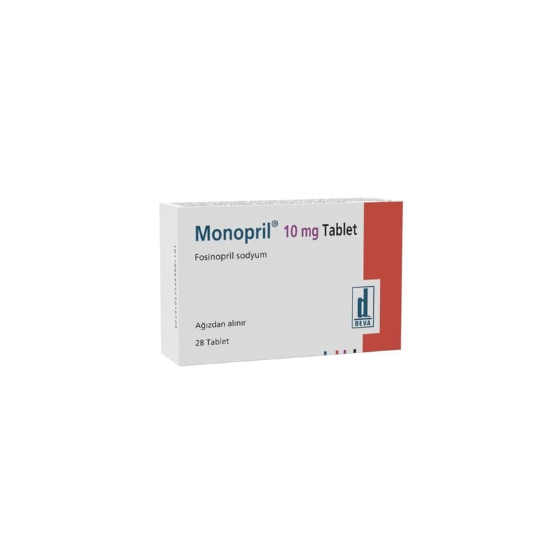

Monopril 10 mg Tablet, 28 Adet

Ne için kullanılır
KT · Bölüm 1• MONOPRİL Anjiyotensin Dönüştürücü Enzim (ADE) inhibitörleri olarak adlandırılan bir ilaç grubuna aittir. • ADE inhibitörleri kan damarlarındaki daralmayı azaltarak daha rahat kan akışını sağlarlar. • MONOPRİL 10 mg tabletlerin her biri etkin madde olarak 10 mg fosinopril sodyum içeren, yuvarlak, bir tarafı çentikli ve çentiksiz yüzünde DEVA M10 yazılı, beyaz ila beyazımsı tabletler şeklindedir. • MONOPRİL 10 mg tablet, 28 tabletlik formları ile kullanıma sunulmaktadır. • MONOPR İL, yüksek tansiyon (hipertansiyon) ve kalp yetmezliği tedavisinde kullanılır.